Part4 ランデブーの準備
ランデブー地点を設定し、高度とタイミングを一致させます。
注意
Nonspherical gravity sourcesを無効にする。
上記の設定を有効にすると、MFDの表示が不正確になる。
ランデブーの難易度が大幅に上がるため、このチュートリアルでは無効にしておくこと。
ターゲットに接近する
時間経過させて、宇宙船がISSに接近するのを待つ。
位置を確認する
Orbit MFDを開いておく。
緑色の直線が宇宙船、黄色がISSの位置を表す。
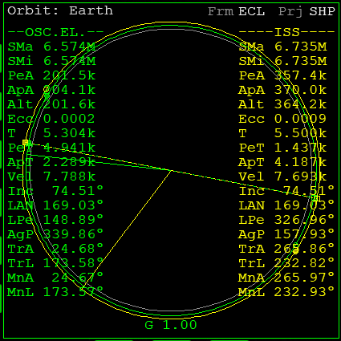
文字が重なって軌道が見づらいときは、MODを何回かクリックする。
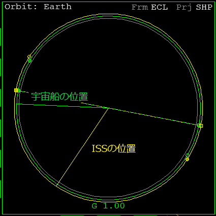
現在、ISSは宇宙船に対して先行している。
宇宙船の軌道高度がISSより低いので、1周するのに必要な時間は宇宙船のほうが短い。
したがって、このまま放置していれば、何もしなくても両者の距離は縮まっていく。
時間経過させる
1000倍までのタイムワープを使う。
T or Rキーを押す。
距離が縮まったら、タイムワープを解除する。
円軌道の8分の1、45°を目安にする。
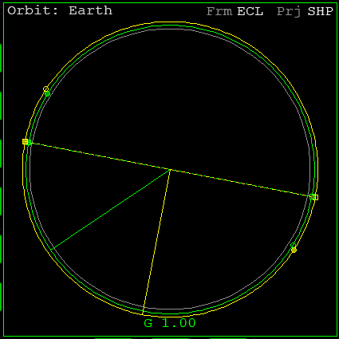
宇宙の昼と夜
Map MFDを開く。
白っぽい部分が昼側。
黒っぽい部分が夜側を表している。
宇宙船が、夜側の手前に移動するのを待つ。
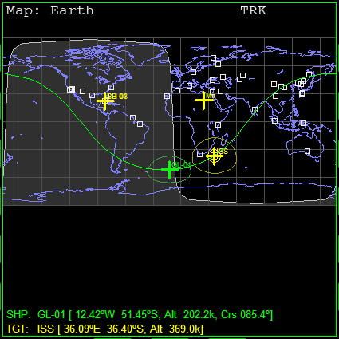
宇宙船が夜側に入ってから加速して、昼側にApを作っておくようにすると、昼側でランデブーできる。
夜側でもランデブーできるが、昼側でランデブーするとドッキングしやすくなる。
ランデブー地点を設定する
新しくAp（遠地点）を作成し、ランデブー地点とする。
ランデブー地点での宇宙船とISSの高度を一致させる。
Orbit MFDを開いておく。
遠地点を作る
ProGrade or PRO-Gをクリック。
機体の回転が止まるのを待つ。
エンジン出力を低く抑えて噴射する。
Ctrlを押したままにする。
テンキー+を押して少しずつ出力を上げる。
MFDの左側で、宇宙船のApAを確認する。
ApAが350kになったら、エンジンを切る。
ISSのPeAは357.4kmである。
これを超えないようにする。
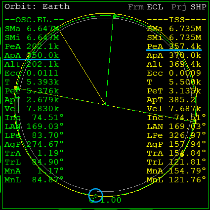
噴射した地点の反対側に、Apができる。
このApの位置でランデブーする。
高度を一致させる
宇宙船のApにおける、ISSの高度を確認する。
黄色の直線が緑の○と重なるのを待つ。
重なったら、ISSのAltの数字を確認する。
この数字を暗記するか、メモを取っておく。
（画像の例では360.9km）
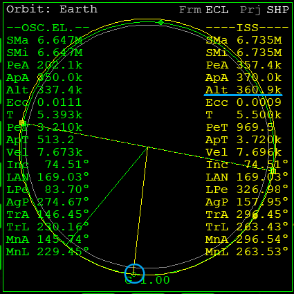
宇宙船をPeの手前に移動させる。
左のPeTが300になるまで待つ。
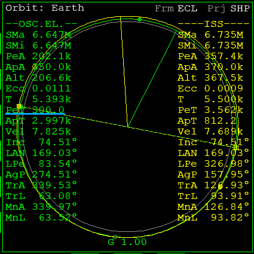
ProGrade or PRO-Gをクリック。
PeTが0になったら、エンジンを噴射する。
Ctrlを押しながら、少しずつ出力を上げる。
ApAを、記憶しておいた数字と同じにする。
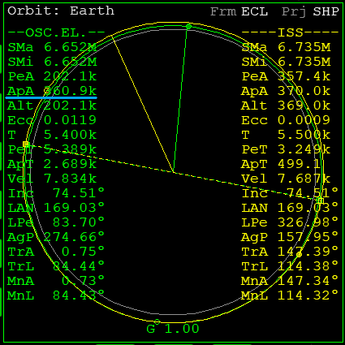
RCS LINにして微調整する。
テンキー6 or 9を押す。
タイミングを合わせる
ランデブーのタイミングを一致させる。
Sync Orbit MFDを使用する。
Sync Orbit MFD
SELをクリック。
Sync Orbitをクリックして開く。
TGTをクリック。
ISSをターゲットに指定する。
MODを何回かクリック。
Ref: Sh apoapsisにする。
宇宙船のApが、ランデブー地点として設定される。
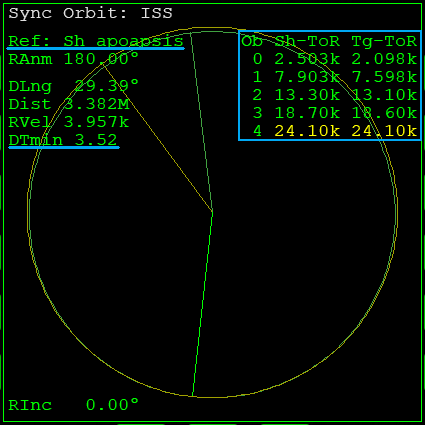
| Sh-ToR | 宇宙船がランデブー地点を通るまでの時間 |
| Tg-ToR | ターゲットがランデブー地点を通るまでの時間 |
黄色の行が、両者が最接近するタイミング。
DTminは到着時刻のずれを示している。
加速・減速して、DTminをゼロにすればランデブーできる。
DTminをゼロにする
Orbit MFDとSync Orbit MFDを開く。
宇宙船をApの手前に移動させる。
左のApTが300になるまで待つ。
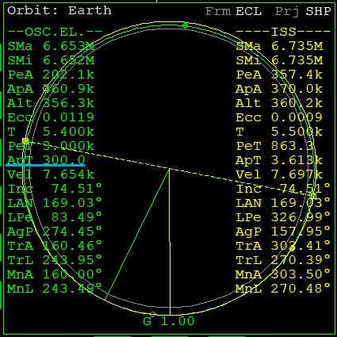
ProGrade or PRO-Gをクリック。
RCS LINにする。
ApTが0になったら、RCSを噴射する。
テンキー6 or 9のどちらかを押してみる。
DTminが小さくなるキーを押し続ける。
DTminを0.00にする。
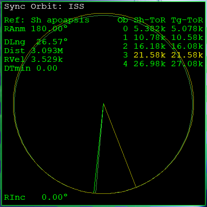
Ctrlとの同時押しで、RCSの出力を抑えて細かい修正ができる。
大きく加速・減速する場合はメインエンジンを使う。
加速ならProGrade、減速ならRetroGradeオートパイロットを実行する。
注意点
Ap以外の場所で加速・減速すると、Apの高度が変わってしまう。
DTminをゼロにするときは、宇宙船がApに到達してからエンジンを噴射する。
DTminをゼロにするとき、Peの高度を下げすぎないようにする。
200km以下だと大気の影響があるので、できるだけ下回らないようにする。
信号を受信する
ISSからの信号を受信するため、周波数を設定する。
周波数を確認する
キーボードでCtrlを押しながらIを押す。
Object infoのダイアログを開く。
左上のドロップダウンメニューをクリック。
Vesselを選択して、右でISSを選択。
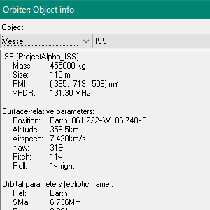
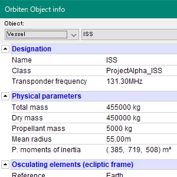
1枚目がOrbiter2010、2枚目が2016
ISSのトランスポンダー、ドッキングポートの周波数を確認する。
| トランスポンダー | Transponder XPDR |
| ドッキングポート | Docking port |
COM/NAV MFD
SELをクリック。
COM/NAVをクリックして開く。
ISSのトランスポンダー周波数を入力する。
NAV1を131.30MHzに設定する。
ドッキングポートの周波数を入力する。
NAV2を137.40MHzに設定する。
| SL- or SL+ | 行を切り換える |
| << or >> | 周波数を変更する |
| < or > |
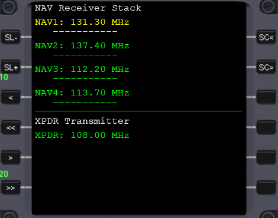
入力を終えたら、Sync Orbit MFDとOrbit MFDを開いておく。
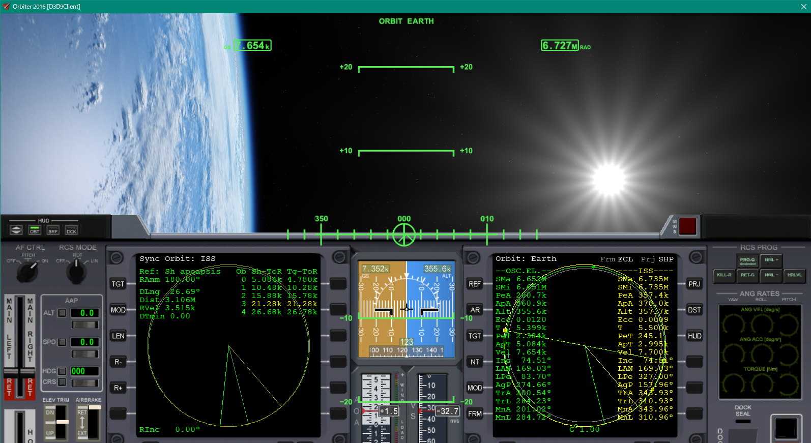
低い高度の目標とランデブーする
自分のほうがターゲットより高い軌道にいるときは、ApとPeを逆にして考える。
- 時間経過させて、ターゲットの少し前方に出る。
- ターゲットのApAより上の高度のPeAを作る。
- 自分のPeAにおけるターゲットの高度を確認して、PeAの高度を同じにする。
- Sync Orbit MFDをRef: Sh periapsisにして、DTminを0にする。